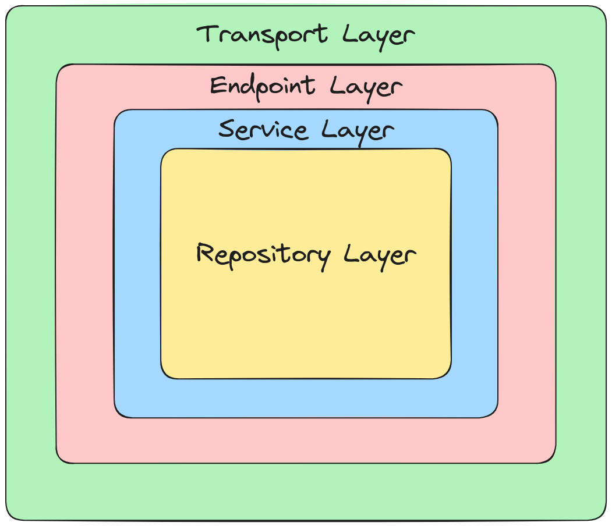

Extending Magistrala Users Repository#
For the past few months, we have been working on integrating Magistrala with Ory Kratos as the user management service. Ory Kratos is a cloud-native identity and user management system, which can be used as the user management service for Magistrala. Let's delve deeper into the myriad capabilities that Kratos brings to the forefront:
- self-service user login and registration. This is the ability to register and log in to the system without the need for an administrator.
- multi-factor authentication with Time-based One-time Passwords (TOTP).
- account verification. This offers the ability to verify a user's email address.
- password recovery. This offers the ability to reset a user's password or recover a forgotten password.
- profile and account management. This offers the ability to update a user's profile and account information.
- admin API for user management.
Our architectural journey has been anchored by the adoption of GoKit which made this a seamless process. Fundamentally, we have been using GoKit as the framework for most of our microservices.
GoKit#
Go kit is a collection of Go packages that help you build robust, reliable, maintainable microservices. Gokit is not an MVC framework but upholds structuring your microservices in a clean architecture or hexagonal architecture:
- transport layer: responsible for encoding and decoding requests and responses.
- endpoint layer: responsible for mapping requests to business logic.
- service layer: responsible for business logic.
we added an extra layer to most of our services called the repository layer. This crucial layer acts as the intermediary responsible for interfacing with the database, thus fostering a clean separation of concerns wherein the repository layer remains blissfully unaware of the intricacies of the transport layer.

With this architecture, we can decouple the services from the database and make it easier to switch between different databases.
Repository Layer#
The repository layer is responsible for communicating with the database. The repository layer is a thin layer that communicates with the database. It is responsible for:
- persisting the data.
- manipulating the data.
- retrieving the data.
- deleting the data.
The repository is modelled using an interface. The interface defines the methods that the repository layer should implement.
Repository Interface#
The repository interface is defined as follows:
// Repository defines the required dependencies for Client repository.
//
//go:generate mockery --name Repository --output=./mocks --filename repository.go --quiet --note "Copyright (c) Abstract Machines"
type Repository interface {
// Save persists in the client account. A non-nil error is returned to indicate
// operation failure.
Save(ctx context.Context, client clients.Client) (clients.Client, error)
// RetrieveByID retrieves the client by its unique ID.
RetrieveByID(ctx context.Context, id string) (Client, error)
// RetrieveByIdentity retrieves client by its unique credentials
RetrieveByIdentity(ctx context.Context, identity string) (Client, error)
// RetrieveAll retrieves all clients.
RetrieveAll(ctx context.Context, pm Page) (ClientsPage, error)
// RetrieveAllBasicInfo lists all clients only with basic information.
RetrieveAllBasicInfo(ctx context.Context, pm Page) (ClientsPage, error)
// RetrieveAllByIDs retrieves for given client IDs.
RetrieveAllByIDs(ctx context.Context, pm Page) (ClientsPage, error)
// Update updates the client name and metadata.
Update(ctx context.Context, client Client) (Client, error)
// UpdateTags updates the client tags.
UpdateTags(ctx context.Context, client Client) (Client, error)
// UpdateIdentity updates the identity of a client with the given id.
UpdateIdentity(ctx context.Context, client Client) (Client, error)
// UpdateSecret updates the secret for a client with the given identity.
UpdateSecret(ctx context.Context, client Client) (Client, error)
// UpdateRole updates the role for a client with the given id.
UpdateRole(ctx context.Context, client Client) (Client, error)
// ChangeStatus changes client status to enabled or disabled
ChangeStatus(ctx context.Context, client Client) (Client, error)
// UpdateRole updates the role for a client with the given id.
UpdateRole(ctx context.Context, client clients.Client) (clients.Client, error)
// CheckSuperAdmin checks if the user with the given ID is a super admin.
CheckSuperAdmin(ctx context.Context, adminID string) error
}
The initial implementation of the repository layer is for PostgreSQL but it can be easily extended and changed to other databases. For this case, we decided to change to using Kratos as the user management service.
Comparison#
When saving a client, the postgresql implementation is as follows:
func (repo *repository) Save(ctx context.Context, c mgclients.Client) (mgclients.Client, error) {
q := `INSERT INTO clients (id, name, tags, identity, secret, metadata, created_at, status, role)
VALUES (:id, :name, :tags, :identity, :secret, :metadata, :created_at, :status, :role)
RETURNING id, name, tags, identity, metadata, status, created_at`
dbc, err := pgclients.ToDBClient(c)
if err != nil {
return mgclients.Client{}, errors.Wrap(repoerr.ErrCreateEntity, err)
}
row, err := repo.DB.NamedQueryContext(ctx, q, dbc)
if err != nil {
return mgclients.Client{}, postgres.HandleError(repoerr.ErrCreateEntity, err)
}
defer row.Close()
row.Next()
dbc = pgclients.DBClient{}
if err := row.StructScan(&dbc); err != nil {
return mgclients.Client{}, errors.Wrap(repoerr.ErrFailedOpDB, err)
}
client, err := pgclients.ToClient(dbc)
if err != nil {
return mgclients.Client{}, errors.Wrap(repoerr.ErrFailedOpDB, err)
}
return client, nil
}
The kratos implementation is as follows:
func (repo *repository) Save(ctx context.Context, user mgclients.Client) (mgclients.Client, error) {
hashedPassword, err := repo.hasher.Hash(user.Credentials.Secret)
if err != nil {
return mgclients.Client{}, errors.Wrap(repoerr.ErrCreateEntity, err)
}
state := mgclients.ToOryState(user.Status)
identity, resp, err := repo.IdentityAPI.CreateIdentity(ctx).CreateIdentityBody(
ory.CreateIdentityBody{
SchemaId: repo.schemaID,
Traits: map[string]interface{}{
"email": user.Credentials.Identity,
"username": user.Name,
"enterprise": slices.Contains(user.Tags, "enterprise"),
"newsletter": slices.Contains(user.Tags, "newsletter"),
},
State: &state,
MetadataPublic: user.Metadata,
MetadataAdmin: map[string]interface{}{
"role": user.Role,
"permissions": user.Permissions,
},
Credentials: &ory.IdentityWithCredentials{
Password: &ory.IdentityWithCredentialsPassword{
Config: &ory.IdentityWithCredentialsPasswordConfig{
HashedPassword: &hashedPassword,
Password: &user.Credentials.Secret,
},
},
},
},
).Execute()
if err != nil {
return mgclients.Client{}, errors.Wrap(repoerr.ErrCreateEntity, decodeError(resp))
}
return toClient(identity), nil
}
The PostgreSQL implementation directly inserts client data into the database using a prepared SQL statement. It utilizes a custom type conversion to convert the client object into a format compatible with the database before insertion.
On the other hand, the Kratos implementation interacts with the Kratos Identity service API to create client identities. It hashes the password before sending it to the API and constructs the identity creation request with various client attributes.
From a high-level perspective, both implementations achieve the same goal of saving client data, but they differ in their approach. This is the reason behind using interfaces. Interfaces are important in software design because they:
- Encapsulate abstraction. An interface defines the behavior of an object, but not its implementation. This allows the implementation to be changed without affecting the clients of the interface.
- Promote loose coupling. Loose coupling is a design principle that minimizes the dependencies between modules. This makes the code more flexible and easier to maintain.
- Allow polymorphism. Polymorphism is the ability to treat objects of different types similarly. This is made possible by interfaces, which define a common set of methods for different types of objects.
With the same service layer with minimal change in logic, the functionality remains the same.
Some pitfalls#
- Creating users. Initially, we hashed passwords in the service layer. However, this was not a good idea because it was not possible to change the hashing algorithm without changing the service layer. We moved the hashing logic to the repository layer.
- Client Filtering Optimization: In our quest for efficient client filtering, we initially employed a straightforward SQL query. However, upon integrating with Kratos, we encountered a roadblock – the inability to directly filter users. Consequently, we were compelled to retrieve the user data first and subsequently apply filtering criteria. This iterative process extends to pagination as well, adding a layer of complexity. While this approach may introduce a slight overhead, it ensures compatibility with Kratos and enables us to effectively filter clients despite the inherent limitations.
- Our experience with PostgreSQL afforded us the luxury of updating clients with a single, succinct query. However, transitioning to Kratos presented a unique challenge. Due to Kratos' utilization of email as the unique identifier for users, updating clients necessitates a different approach. Rather than directly executing an update query, we first retrieve the user data to obtain the email and username, followed by the execution of the update operation. While this two-step process may seem cumbersome compared to the simplicity of PostgreSQL, it ensures compliance with Kratos' user identification methodology. Despite the additional network calls involved, this approach ensures data integrity and compatibility with Kratos' unique architecture.
Conclusion#
As we explored the rich capabilities that Kratos brings to the forefront, including self-service user operations, multi-factor authentication, and comprehensive admin APIs, we also encountered several challenges and pitfalls along the way.
In essence, our integration with Ory Kratos exemplifies our commitment to adaptability, flexibility, and resilience. By embracing challenges as opportunities for growth and refinement, we pave the way for a robust and scalable user management solution that meets the evolving needs of Magistrala and its users.